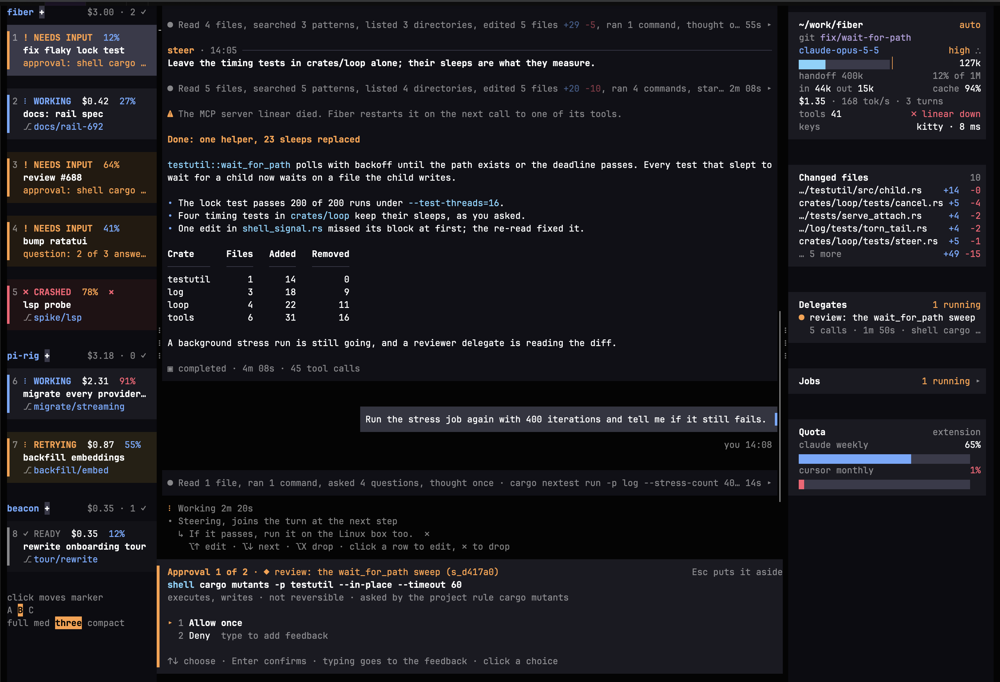

Sessions outlive the terminal
Every session runs headless under a hub. Close the terminal and the work keeps going; reopen it and you’re back. Pair a phone or another machine with its own device token, and every client sees the same session.
Sessions live in a hub, not your terminal window. Watch every project from one screen, hand work to Claude Code or cursor-agent, and replace any part of Fiber you don’t like. In 13 MiB.
curl -fsSL https://github.com/aakshintala/fiber/releases/latest/download/install.sh | sh
macOS and Linux · Install instructions

fiber to the first frameCeilings on Linux x86_64. A change that crosses one fails CI. Every budget
Every session runs headless under a hub. Close the terminal and the work keeps going; reopen it and you’re back. Pair a phone or another machine with its own device token, and every client sees the same session.
An extension registers tools, providers, hooks, commands and screens through the same seams the built-ins use. Give it a built-in’s name and it replaces that built-in. Write it in Lua, inside the session at about 150 KiB, or as a program in any language.
Hand part of the work to another Fiber session, Claude Code or cursor-agent, each with your own setup for that tool. Every delegate is a background job you can wait on, talk to or stop.
Calls your rules don’t settle go to a reviewer model that reads what you asked for and judges the call against it. A blocked call goes back to the agent to find another way; you’re asked only when it keeps hitting the wall.
Anthropic, OpenAI, Gemini API, ChatGPT/codex, OpenRouter, OpenCode, Databricks, muse, AWS Bedrock, Google Vertex and Azure.
fiber import copies your Claude Code or Codex configuration into Fiber once.